Reforma de estofados
Sofás, poltronas, cadeiras e puffs. Revisamos estrutura, percintas, espumas e revestimento para devolver conforto e presença ao ambiente.
Ateliê de alta tapeçaria · São Paulo
Reforma de sofás, poltronas e estofados com padrão de excelência. Restauração fiel e mobiliário sob medida para residências e projetos de arquitetura.
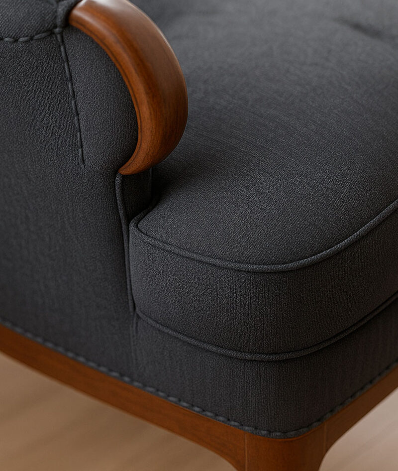
Manifesto
Não descartamos histórias.
Redesenhamos o que elas podem ser.
O ateliê

A InovArt é uma tapeçaria em São Paulo com mais de 25 anos de ofício. Reformamos sofás, poltronas e cadeiras; restauramos peças com história; criamos cabeceiras e móveis sob medida.
Atendemos residências, arquitetos e designers — com seleção cuidadosa de tecidos, domínio estrutural e acabamento que sustenta o uso do dia a dia.
SP · Grande SP · ABCD · Interior
Serviços
Do sofá de sala à poltrona de família — cada projeto começa pela escuta e termina no detalhe que só a mão vê.
Sofás, poltronas, cadeiras e puffs. Revisamos estrutura, percintas, espumas e revestimento para devolver conforto e presença ao ambiente.
Cabeceiras sob medida com volume, costuras e acabamento alinhados ao projeto do quarto — do clássico ao contemporâneo.
Capas com encaixe preciso para proteger e renovar o visual sem abrir mão do conforto — ideais para uso intenso e troca sazonal.
Peças antigas e clássicas recuperadas com respeito à história original: estrutura, enchimento e revestimento em diálogo com o passado.
Sofás, poltronas e camas projetados para o espaço real — medidas, densidade e estética definidas com você.
Orientação para arquitetos, designers e clientes finais na escolha de tecidos, cores, texturas e tipologias de estofado.
Por dentro
Uma tapeçaria séria não troca só o tecido. Ela reconstrói o que sustenta o conforto.
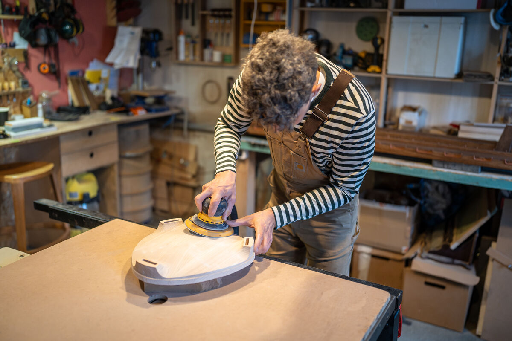
Avaliamos madeira, uniões e estabilidade. Sem base firme, o revestimento novo não dura.
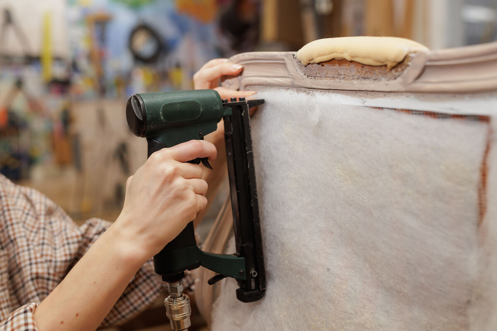
Redistribuímos o apoio e corrigimos pontos de afundamento para o assento voltar a “abraçar”.
Escolhemos densidades adequadas ao uso — mais firme no assento, mais aconchegante no encosto.
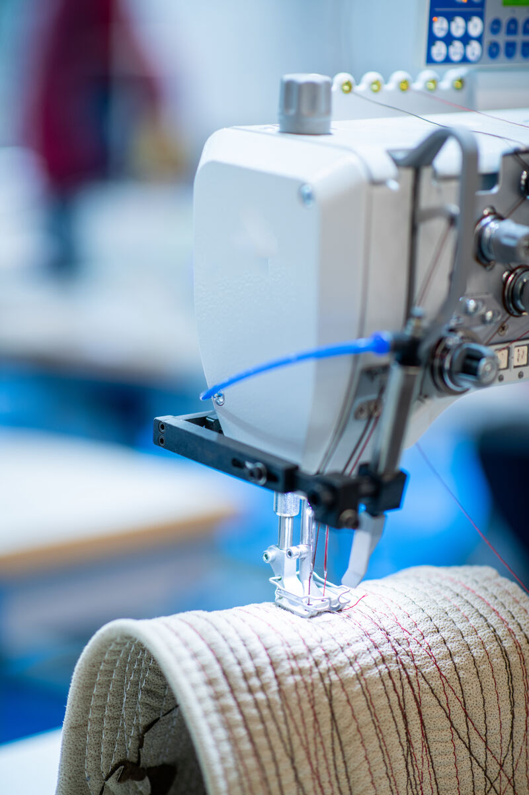
Do corte ao pregão: alinhamento de padrões, costuras limpas e remate que fecha o projeto.
Especialidades
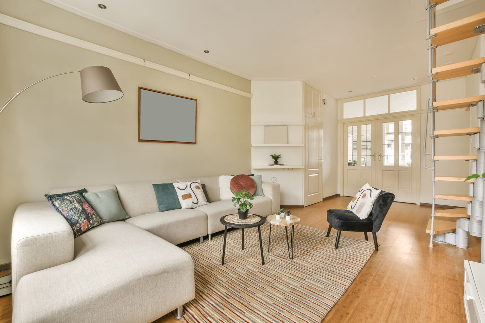
Renovamos sofás living, retráteis, poltronas e conjuntos. Do diagnóstico estrutural ao tecido final, com acabamento de alto padrão.
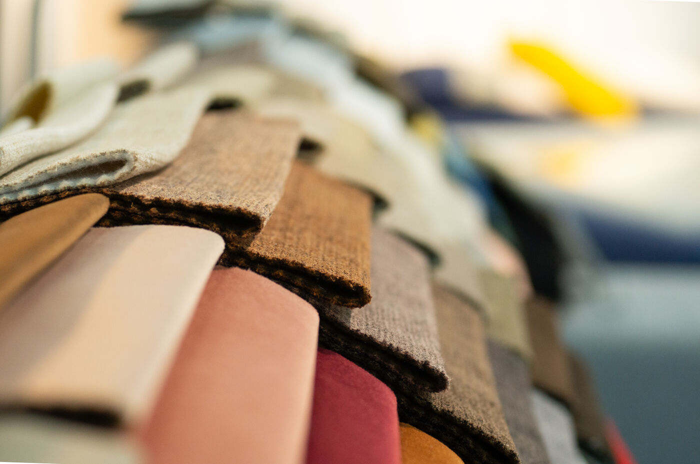
Aplicamos tecido em paredes para criar aconchego acústico e visual — uma assinatura de interiores que o papel não entrega.
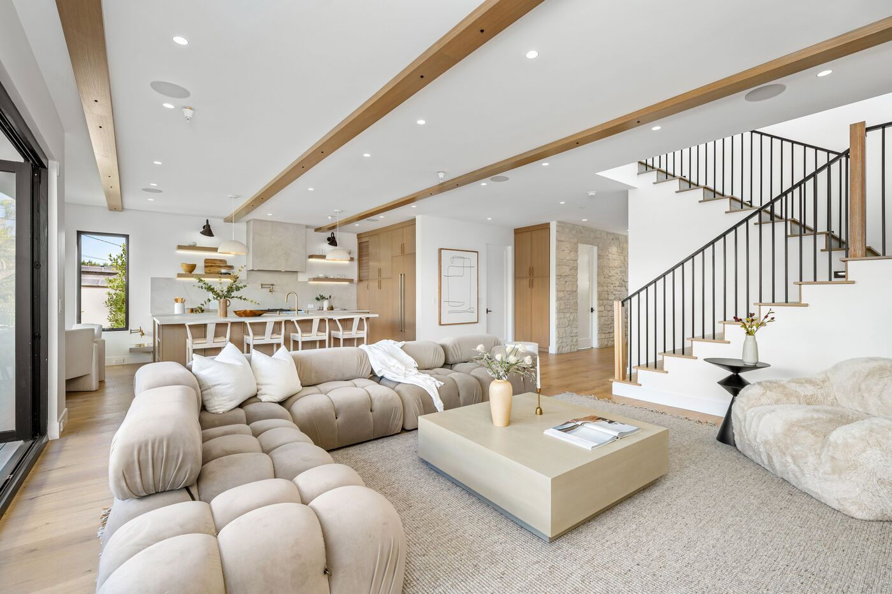
Projetamos e fabricamos peças exclusivas para o espaço real da casa ou do escritório — medidas precisas, estética definida.
Por que InovArt
Tradição artesanal, equipe experiente e orçamento transparente — o trio que faz a diferença entre “trocar o tecido” e realmente reformar.
Técnicas clássicas de tapeçaria com materiais atuais de alta qualidade.
Alinhamento de padrões, costuras e remates que fecham o projeto.
Orçamento claro, sem surpresa — o melhor custo-benefício em tapeçaria SP.
Materiais
Orientamos a escolha conforme uso, luz, manutenção e estilo do ambiente — sem forçar tendências que não cabem na sua peça.
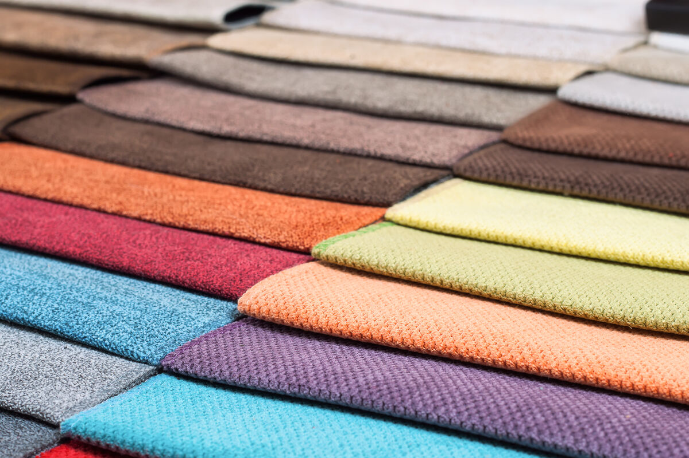
Linho, algodão, blends e jacquards para residências e projetos de interiores.
Opções para alto tráfego, limpeza prática e estética contemporânea ou clássica.
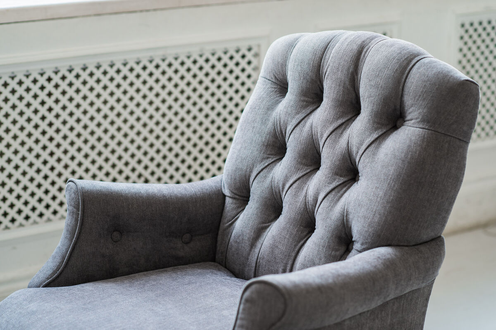
Da paleta neutra ao contraste marcante — alinhamos material ao projeto.
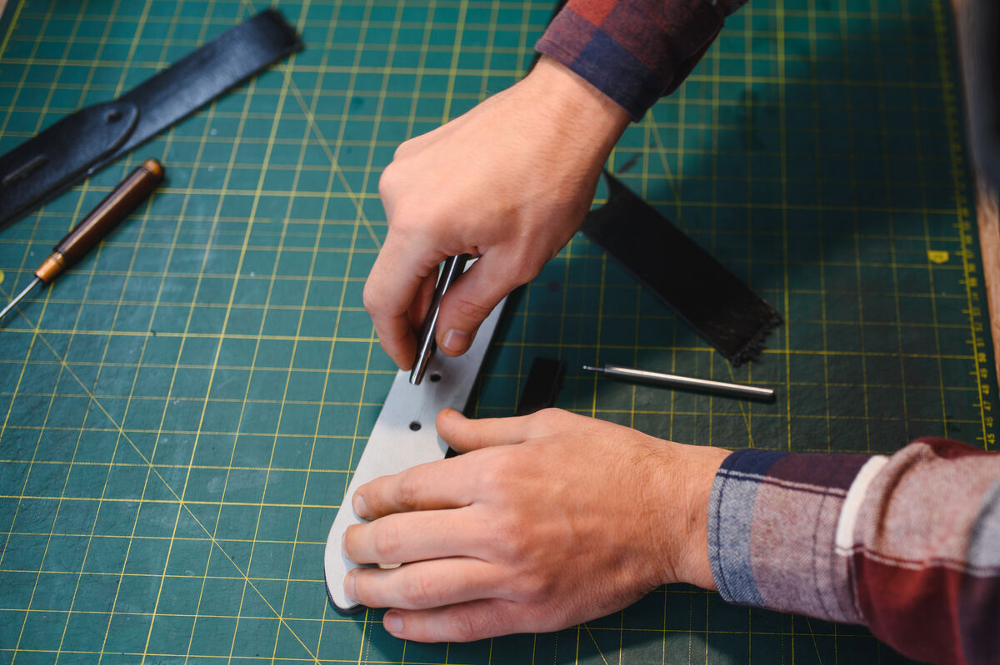
Costuras, botões, pregões e detalhes que transformam a peça em assinatura.
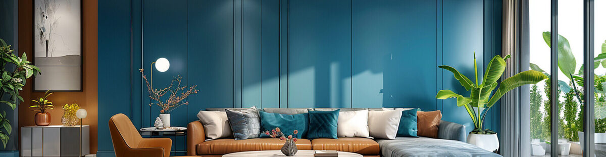
Processo
Visitamos o local ou recebemos a peça no ateliê. Entendemos uso, estilo e expectativa.
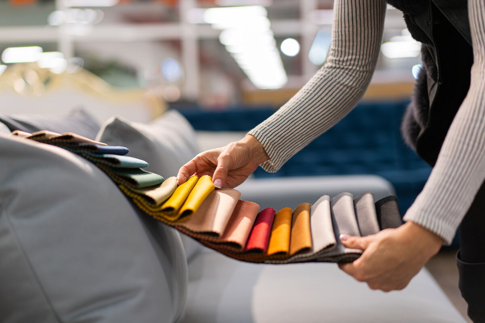
Tecidos, densidades, técnicas, prazo e orçamento — tudo alinhado antes de começar.
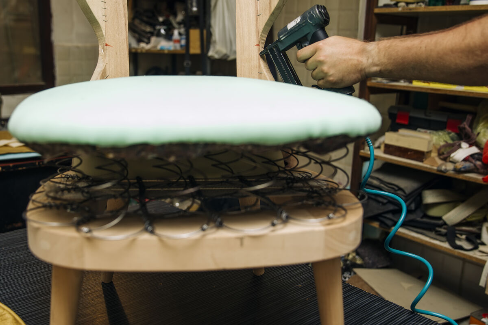
Tapeçaria artesanal no ateliê, com progresso comunicado e atenção aos remates.
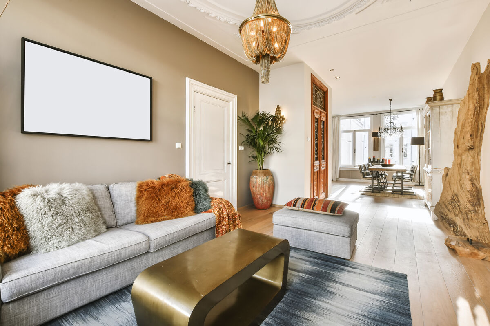
Devolvemos a peça transformada ou instalamos no ambiente — pronta para viver.
Galeria
Do ateliê ao ambiente final. Clique para ampliar.
Depoimentos
Histórias de peças que voltaram para casa transformadas.
★★★★★
A InovArt transformou completamente meu sofá antigo, que tinha valor sentimental. O trabalho artesanal foi impecável e superou todas as minhas expectativas. Recomendo para todos os meus clientes.
★★★★★
Minha poltrona da vovó estava em péssimo estado. A equipe da InovArt devolveu a vida à peça mantendo sua essência original. Ficou linda e confortável novamente.
★★★★★
Trabalho com a InovArt há anos em diversos projetos. A qualidade, a pontualidade e a atenção aos detalhes são excepcionais. É meu parceiro de confiança para todos os trabalhos de tapeçaria.
Área de atendimento
Procurando tapeçaria perto de mim na zona norte? Atendemos reforma de sofá e estofados a partir do Parque Mandaqui, com cobertura em toda a capital, Grande SP, ABCD e interior paulista.
FAQ
O valor depende do modelo, estado da estrutura, tecido e acabamento. Após avaliar a peça, enviamos orçamento transparente. Fale no WhatsApp (11) 94312-5880.
Quando a estrutura está boa e a peça tem valor sentimental, de design ou de medida especial, a reforma costuma ser mais inteligente: você preserva o que importa e renova conforto e aparência.
Sim. Atendemos São Paulo capital, Grande São Paulo, ABCD e interior paulista. Nosso ateliê fica no Parque Mandaqui, zona norte.
Sim. A restauração artesanal preserva a história da peça, recuperando beleza e funcionalidade com técnicas tradicionais.
Sim. Fabricamos cabeceiras, sofás, poltronas e camas sob medida para residências e empresas.
O prazo varia conforme a complexidade. Informamos a estimativa junto com o orçamento, após a avaliação.
Sim. Orientamos a escolha de tecidos, cores e texturas conforme uso, estilo e durabilidade desejada.
Chame no WhatsApp, descreva o móvel ou envie fotos. Avaliamos no local ou no ateliê e retornamos com proposta clara.
Envie fotos pelo WhatsApp e receba orientação para reforma de sofá, poltrona ou projeto sob medida.
Chamar no WhatsAppContato
Endereço
R. Menelau Campos, 30
Parque Mandaqui, São Paulo – SP
CEP 02422-080
WhatsApp
(11) 94312-5880